Caroline & Jackson

They are beautiful… beautiful in friendship, in love, in generosity and in humour. A radiant couple! Love and union were their priority. After an intimate ceremony at the town hall, they returned to Domaine de Cap'Bat for a deeply moving celebrant-led ceremony: their story revealed, love everywhere and laughter shared!
That weekend, Mont-de-Marsan was celebrating the Fêtes de la Madeleine, and the festival echoed through the wedding: blue bandanas, traditional music and a party until dawn. Together, the couple celebrated a new chapter of their life.
« We recommend her 1000%. It has been almost three weeks since our wedding, this beautiful adventure alongside Alexandra, came to an end. More than a wedding planner, Alexandra was a shoulder, a confidante, an unwavering support we could count on throughout the months of preparation. The closer the day came, the higher the pressure, and the more she fulfilled her essential role with kindness and simplicity. Alexandra masters every step of planning a wedding: research, contacts, coordination, negotiation, decor, staging… and does it all with a smile and humility. She is a true gem we recommend without hesitation! Her professional and personal qualities will let you enjoy the most beautiful day of your life fully and serenely. Thank you so much. »Caroline & Jackson Translated from French

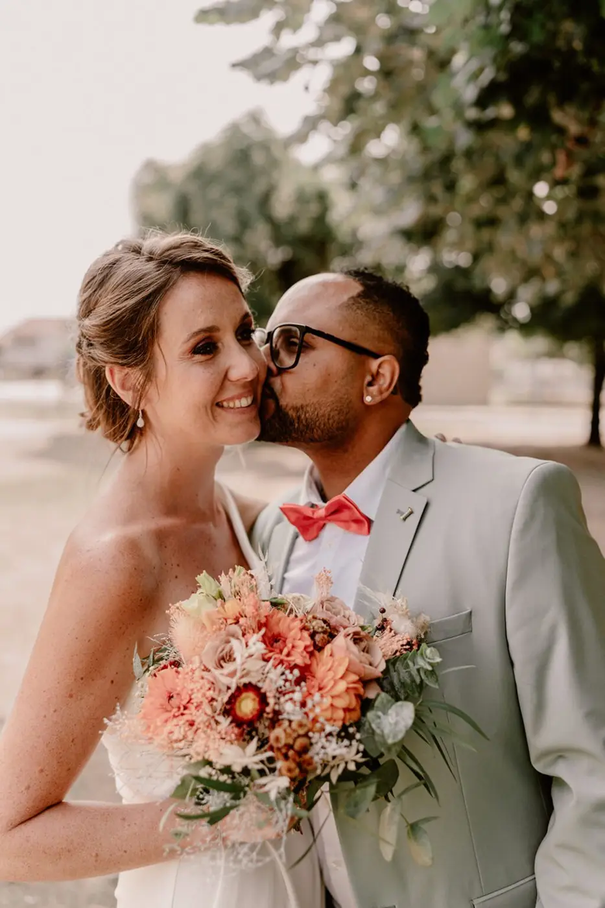
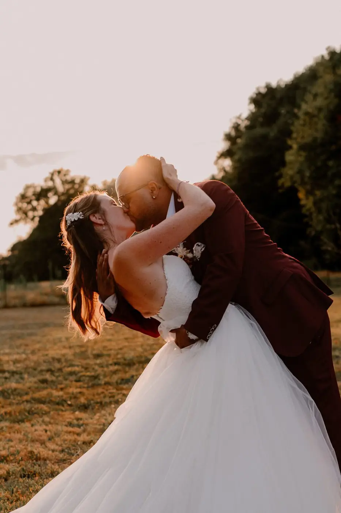
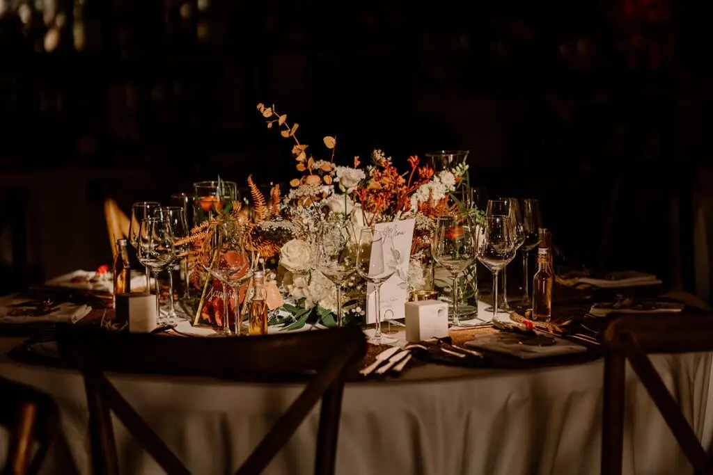
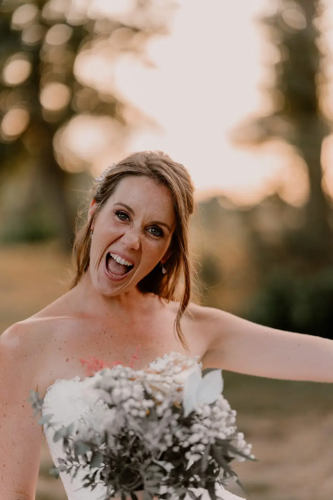
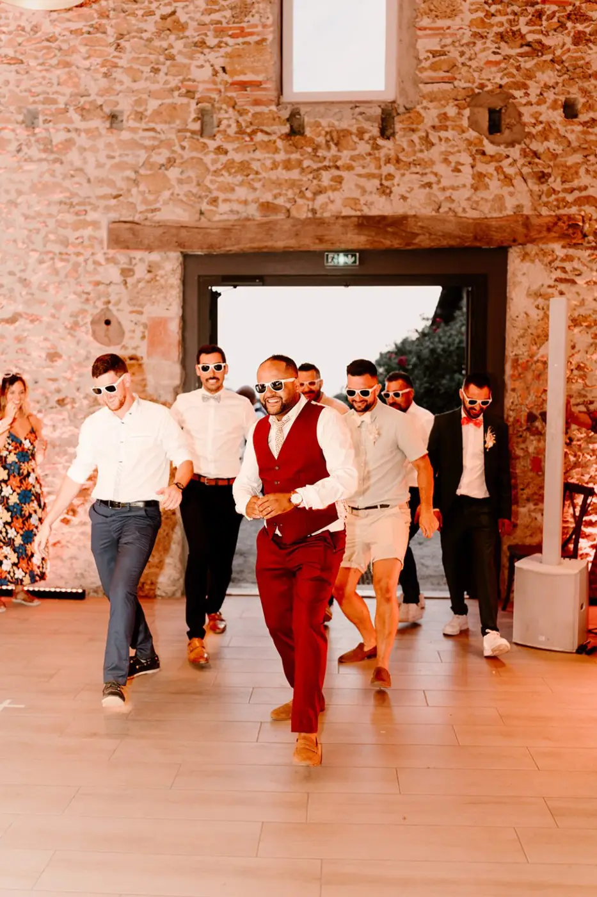

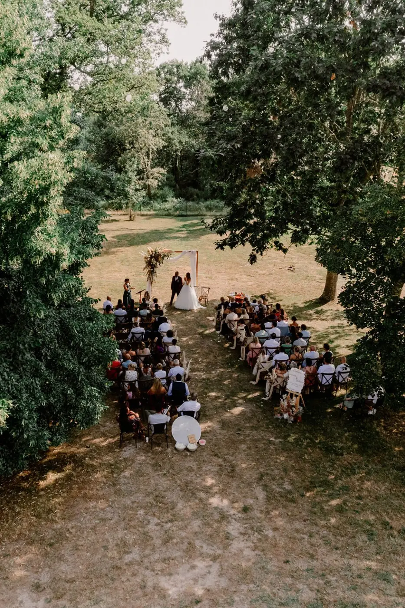

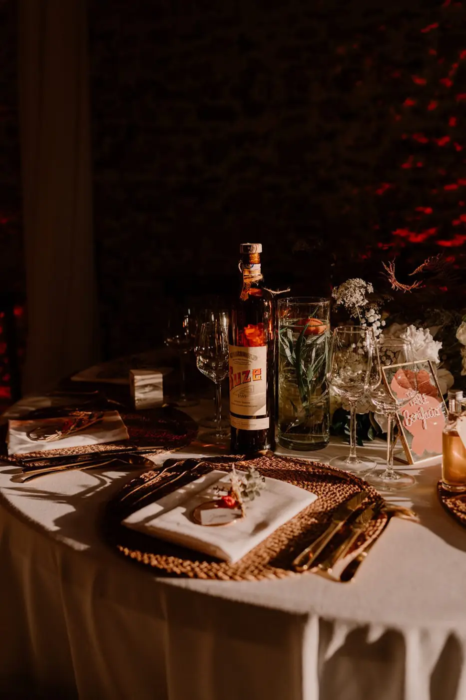


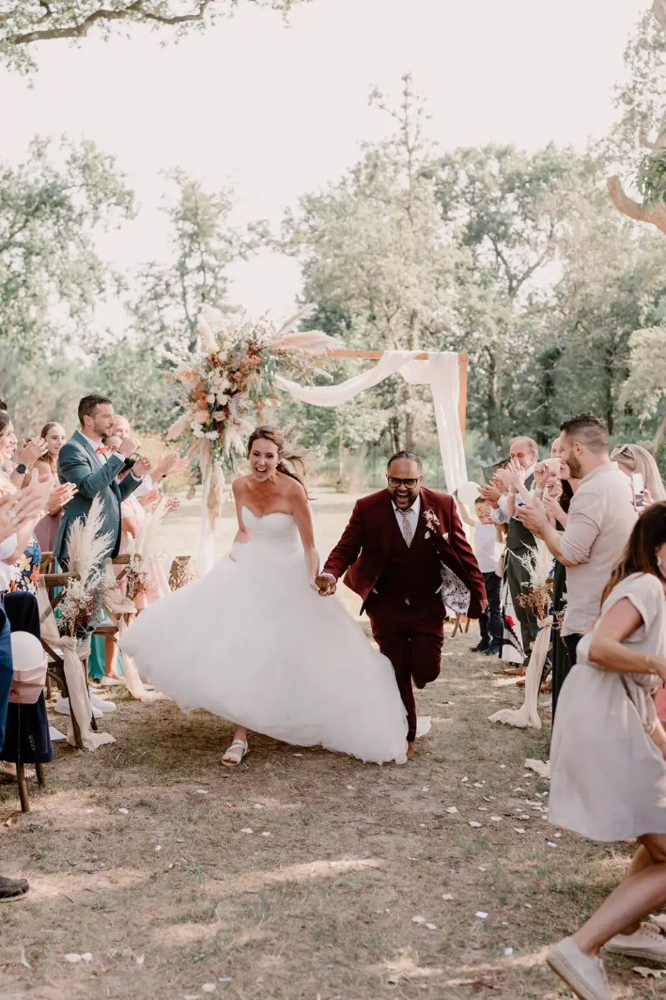


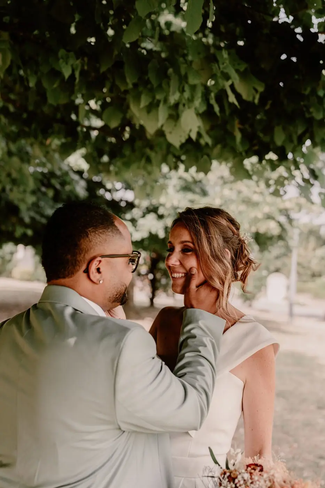

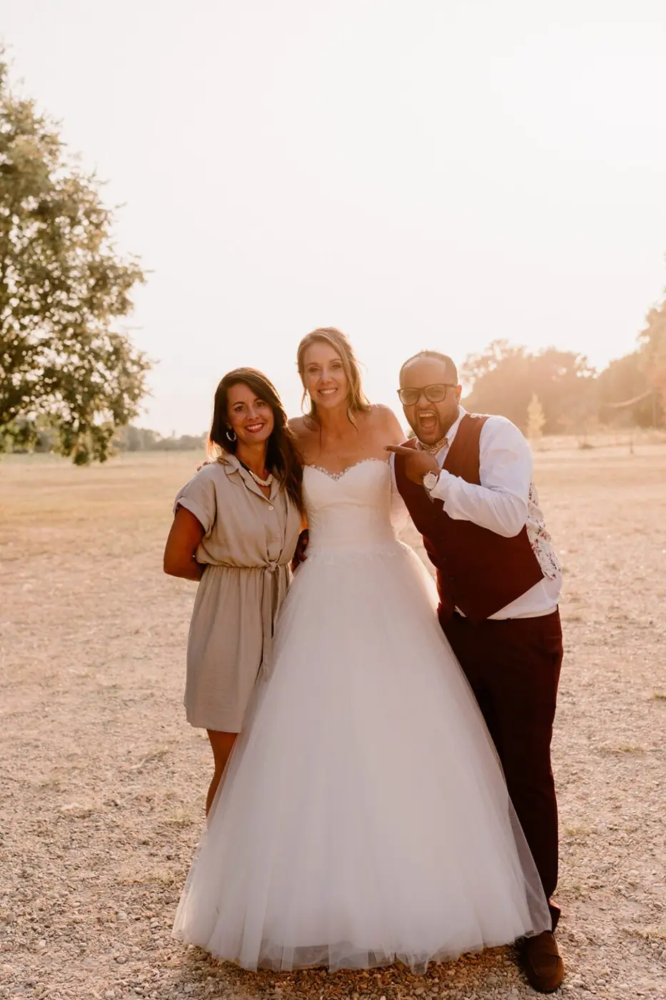
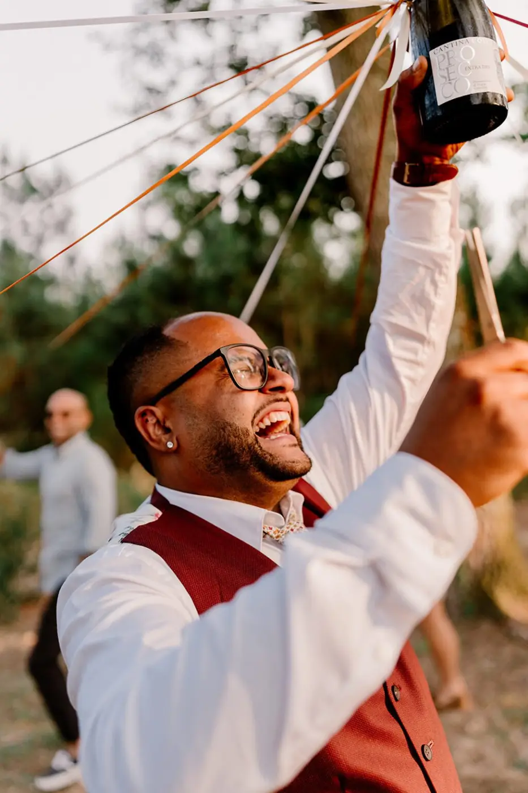
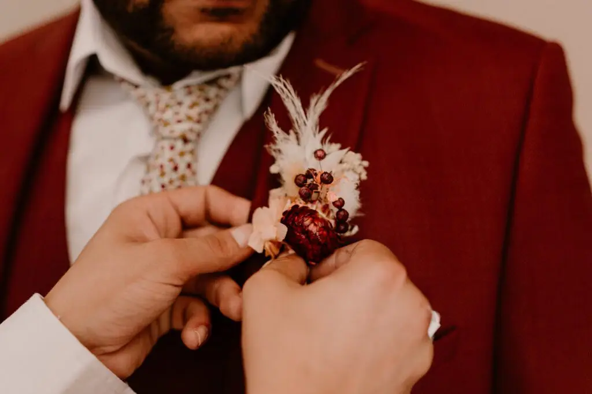


Jennifer & Laurent
After a proposal on a small beach near the tip of Cap Ferret, facing the Dune du Pilat, Jennifer and Laurent celebrated their wedding at the magnificent Château de Garde…
Read their story © Tristan Perrier
© Tristan PerrierMarion & Charles
In May 2022, Marion & Charles said “I do” for the rest of their lives! A chic and bohemian wedding, colourful and refined: everything we love… A day rooted in tradition…
Read their story